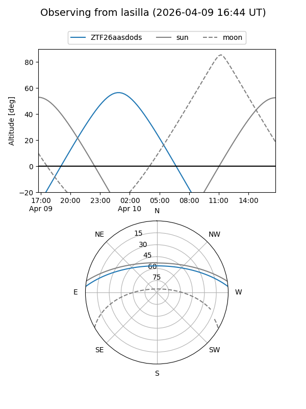
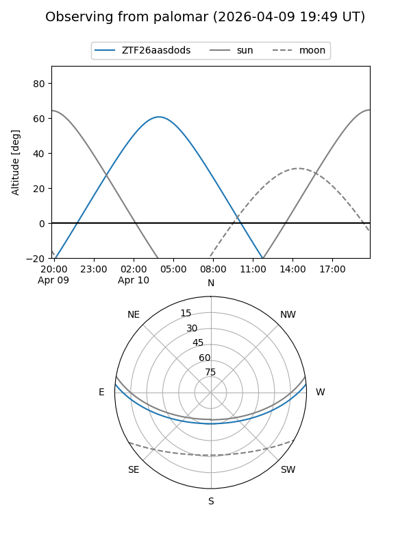

ZTF26aasdods
Target ZTF26aasdods at 2026-04-10 06:00
Aliases and brokers:
FINK: link
Lasair: link
ALeRCE: link
alt names
ZTF26aasdods (ztf,fink_ztf)
Coordinates:
equatorial (ra, dec) = 140.0971,+4.28172
equatorial (HMS+DMS) = 09:20:23.31,+04:16:54.18
galactic (l, b) = (227.6610,+34.82644)
Flags:
Photometry:
last ztfg=16.81
1 ztfg detections
Lightcurve
Visibility


Additional plots